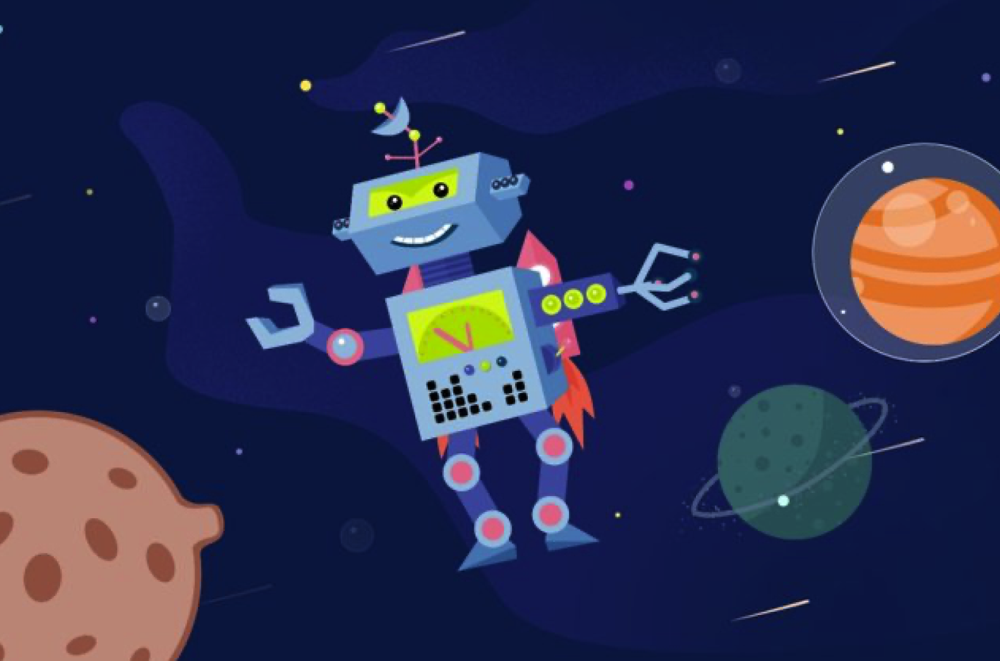
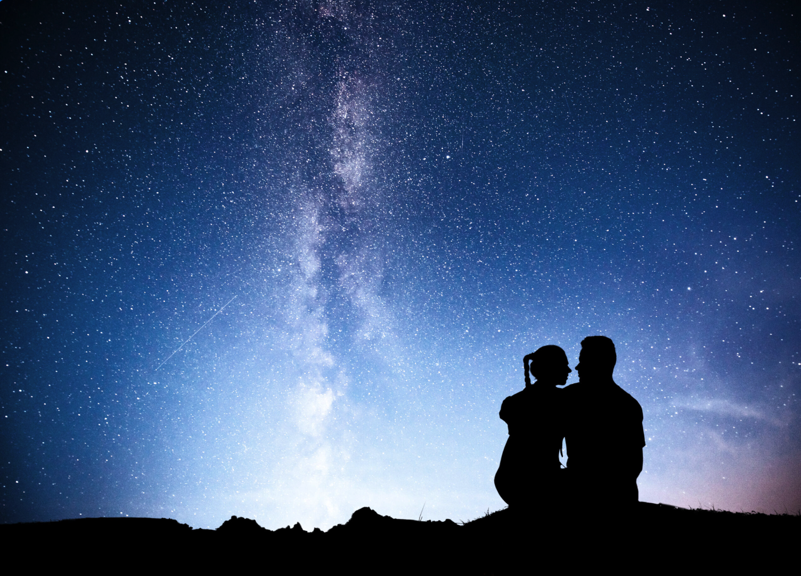
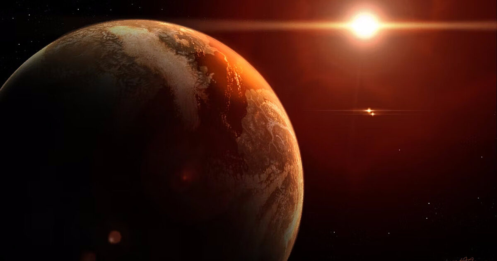
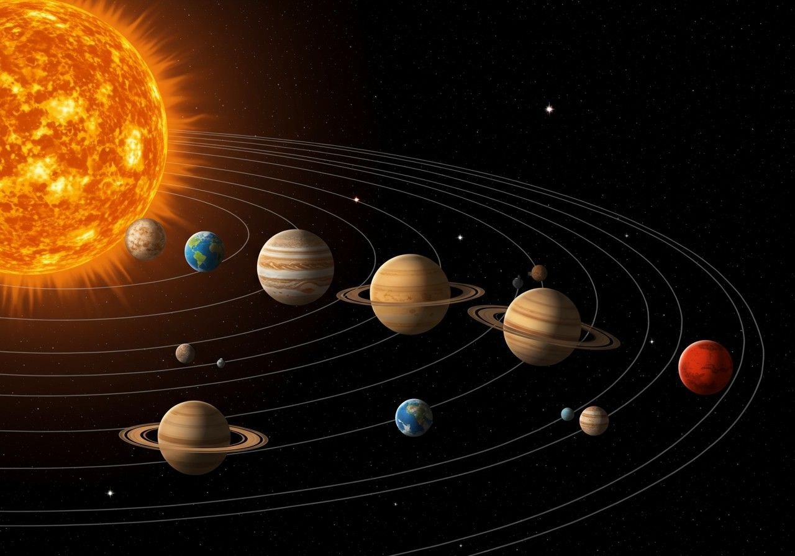

Aktuális Programjaink

AZ UNIVERZUM SÖTÉT OLDALA
Fedezd fel a fekete lyukak titokzatos világát! Egy lenyűgöző utazás során megismerheted az univerzum legerősebb és legveszélyesebb objektumait.

ŰR OVI
Interaktív, mesélős előadás a legkisebbeknek. Egy űrhajóssal fedezik fel az űrt és a bolygókat közös énekléssel és játékokkal.

RANDI AZ ISMERETLENBEN
Pároknak szóló exkluzív est csillagképekhez kapcsolódó szerelmi legendákkal, hullócsillag-nézéssel és egy pohár pezsgővel.

UTAZÁS A KOZMOSZ PEREMÉRE
Tudományosan pontos és látványos utazás a Naprendszer bolygóitól egészen a távoli galaxisokig.

A VÖRÖS TÖRPE TITKA
Utazás egy különleges csillagtípus világába, ahol kiderül, miért lehetnek a vörös törpék az élet keresésének fontos célpontjai.